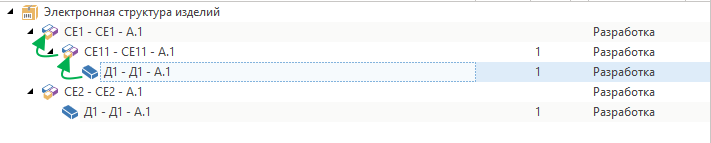

Получение родительского объекта |
Пример получения конкретного родительского объекта для выделенного объекта в справочнике со сложной иерархией

/* Ссылки: TFlex.DOCs.IoC.Infrastructure.dll TFlex.DOCs.UI.Client.dll*/ using System.Linq; using TFlex.DOCs.IoC.Infrastructure.Interfaces.ViewModels.Base; using TFlex.DOCs.IoC.Infrastructure.Interfaces.ViewModels.References; using TFlex.DOCs.Model.Macros; using TFlex.DOCs.Model.References; using TFlex.DOCs.UI.Client.Common.ViewModels; public class ParentFromUI(MacroContext context) : MacroProvider(context) { public override void Run() { if (Context is not UIMacroContext uiMacroContext) // Проверяем, выполняется ли макрос в графическом интерфейсе пользователя return; // Если необходимо обработать текущий выбранный объект справочника, то получаем из контекста макроса его модель представления // if (uiMacroContext?.ReferenceObjectViewModel is not IReferenceObjectViewModel referenceObjectViewModel) // return; if (uiMacroContext.OwnerViewModel is not ISupportSelection supportSelectionViewModel) // Проверяем, поддерживает ли текущее окно выделение объектов return; var selectedObjectViewModels = supportSelectionViewModel.SelectedObjects.OfType<IReferenceObjectViewModel>(); // Получаем модели представления выбранных объектов foreach (var selectedObjectViewModel in selectedObjectViewModels) { // Получаем модель представления родительского объекта (на скриншоте - СЕ11 - СЕ11 - A.1) var parentVewModel = selectedObjectViewModel.Parent as IReferenceObjectViewModel; // Если необходимо для выбранного объекта получить корневой объект(на скриншоте - СЕ1 - СЕ1 - A.1): while (parentVewModel is not null) { if (parentVewModel.Parent is IReferenceObjectViewModel nextParent) parentVewModel = nextParent; else break; } if (parentVewModel is not null) { ReferenceObject parentObject = parentVewModel.ReferenceObject; // Из модели представления получаем объект справочника // Выполняем действия над родительским объектом } } } }